I'm a product designer who loves untangling messy problems and turning them into experiences that just click. I've been designing since 2016, blending a background in Cognitive Science with a lifelong creative streak (thanks to my artist mom) to craft products that are as intuitive as they are impactful.
I'm currently designing in the San Francisco Bay Area.
When I'm not deep in Figma, you can find me exploring one of my many hobbies from creative side projects to small experiments that let me stay curious and keep learning.
Here are a few things I've been working on for fun lately ↓
Things I do for fun
Experimenting with AI
Currently creating a cooking journal to log recipes, track each attempt, and notes on how to make every dish better next time
Action photography
Capturing the happy, candid moments with my muse
Baker in making
Trying my hand with beginner level baking to level up into a pastry chef wannabe
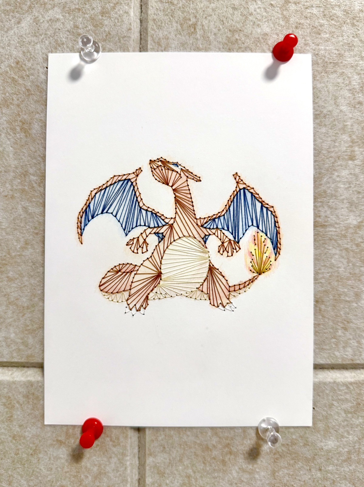
Paper sewing
Combining coloring, sewing and a recent obsession of Pokemon into art
GRAIL needed to expand its Galleri cancer screening test from a benefits-only ordering flow to a direct-to-consumer onboarding system. This project redesigned and rearchitected the end-to-end ordering experience to accommodate the complexity of telemedicine, regulatory, and cross-functional constraints while reducing friction for patients.
27.3%
Increase in completed test orders from telemedicine channel
30%
Faster time to complete the ordering workflow
52%
Decline in login related support tickets
01 — Context
Expanding Galleri to the general public
GRAIL initially offered its early cancer detection test only through employer benefits programs or with providers directly. As the company expanded to nationwide direct-to-consumer access, the ordering experience became the primary acquisition funnel.
The business goal
Increase activation and successful order completion without compromising medical rigor or compliance.
The potential risk
Opening access to the public dramatically increases potential friction, support burden, and abandonment which directly impacts revenue and trust.
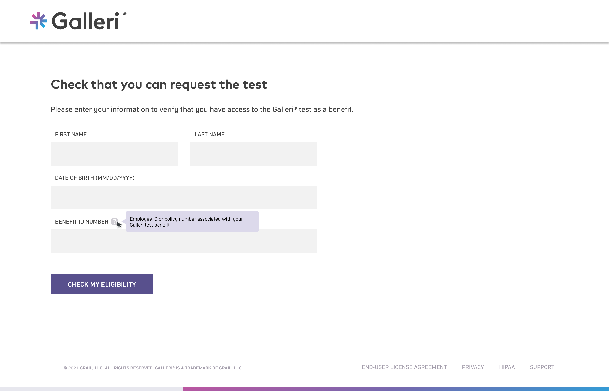
02 — The Problem
A flow built for one model, asked to serve another
The test launched to the public with great momentum. Unfortunately, we were met with a lot of critical observations:
Significant drop-off at account creation
High volume of login-related support tickets
Continued abandonment during medical intake
Frustration with ~23 minute long form to submit
Two Friction clusters appeared
Account Creation
→
Portal Access
→
Medical Intake & Eligibility Screening
→
Order Submission
→
Testing Experience
→
Result Access
⚠ Users hit friction points at highlighted steps
Mandatory account creation before even determining eligibility
Long, convoluted intake flow mixing eligibility screening, medical questionnaire, and compliance requirements
The system was optimized for structured benefits access, not public onboarding.
03 — Key Insights
Research revealed two distinct key insights
I ran moderated usability sessions, analyzed metrics, and went onsite to different Galleri events to discover the root of the problem. This uncovered two points:
Insight 1
Users were being asked for full account commitment before they had even confirmed eligibility. This commitment was sequenced too early in the process. This was clear from the overwhelming amount of support tickets related to account creation/login that translated to no orders.
Insight 2
The intake was structured as a long-winded form but the content should functionally be a medical decision tree. We were exposing internal data architecture rather than guiding user progression.
💡 Key synthesis: This shifted our original hypothesis of the problem from “shorten the form” to “re-sequence the system.”
04 — Constraints
What we were working within
Medical AffairsMedical Affairs defined the intake content and data. This was mandatory for data collection for future applications like clinical studies or FDA approval processes.
LegalLegal governed the copy, consent, terms, and result delivery language. They were also the experts in state laws and regulations to give guidance for very specific scenarios.
EngineeringEngineering enlightened the technical feasibilities of the changes and solutions. With the model of our infrastructure, they were a very prominent stakeholder.
Customer ExperienceCustomer Experience brought a lot of knowledge of the dependencies in the broader patient journey outside of the onboarding, intake, and software.
The design principle that guided every decision in this project
"Make it easy to get started. Then walk users through the complexity step-by-step."
05 — Design Changes · Change 1
Capturing user buy in immediately
Our hypothesis was that if we capture intent before requiring full account creation, abandonment will decrease. And so I made the following changes:
Introduce guest checkout to capture the orders and buy in from user immediately
Have the system create an account using the information provided on the intake form
Implement passwordless magic-link authentication for seamless account creation and login experience
We realized the issue wasn't the account creation itself, but when it appeared. We were essentially asking for commitment before the users had confidence.
By allowing users to move forward first and formalize the account later, we aligned the system with natural decision-making: curiosity → clarity → commitment.
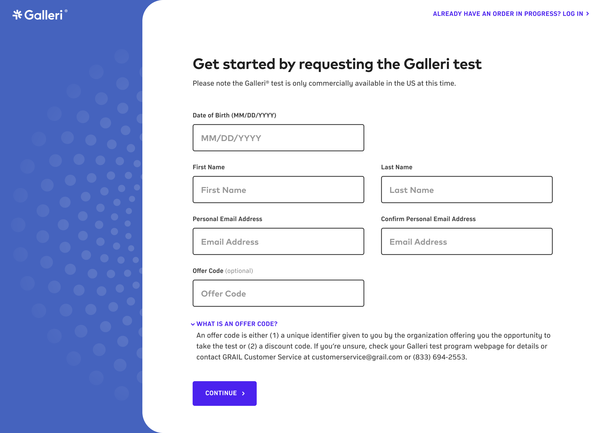
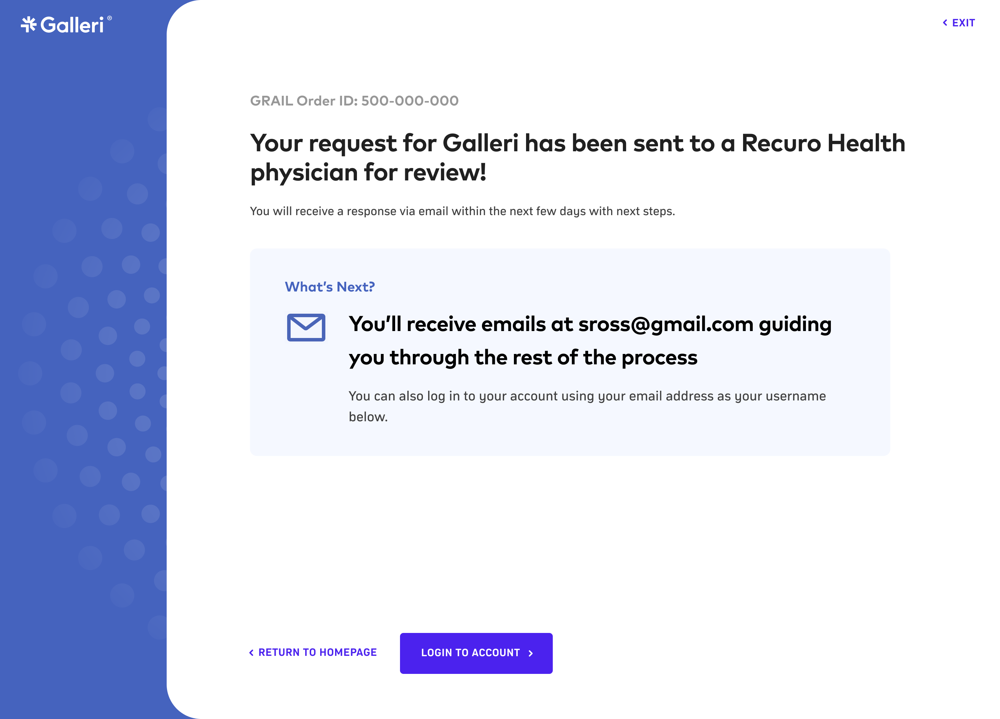
Impact · Change 1
~18%
Increase in order submissions and accounts successfully created
52%
Less login-related support tickets within 60 days
05 — Design Changes · Change 2
Turning a long form into a guided workflow
If users are guided with more structured steps and presented with eligibility gates early in the process, more users will complete their orders without feeling overwhelmed. With this theory in place, I made the following changes:
Before — 10 steps & 25-33 Questions
Account Creation
Login
Order Recipient
Consent
Basic Info
PCP Info
Clinical Info
Review
Payment Info
Order Submit
Orange steps = Areas with high friction and no clinical value for telemedicine
After — 7 steps & 15-18 Questions
Basic Info
Eligibility Info
Consent
Clinical Info
Review
Payment Info
Order Submit & Account Created
4 steps removed or consolidated — same clinical outcomes, less user burden
Previously, all users had to complete the same 6 steps to even determine eligibility. Now, if a user is not eligible, they only need to complete the first step.
Introduced progressive disclosure instead of presenting everything at once
Consolidated redundant fields with the Medical Affairs team
Organized sections around how patients think about their health, not how our systems store data
The problem wasn't the length but the structure and guidance.
When the form felt dense and clinical, patients hesitated. When it felt guided and sequential, they moved forward with confidence.
Prototype walkthrough
Design details
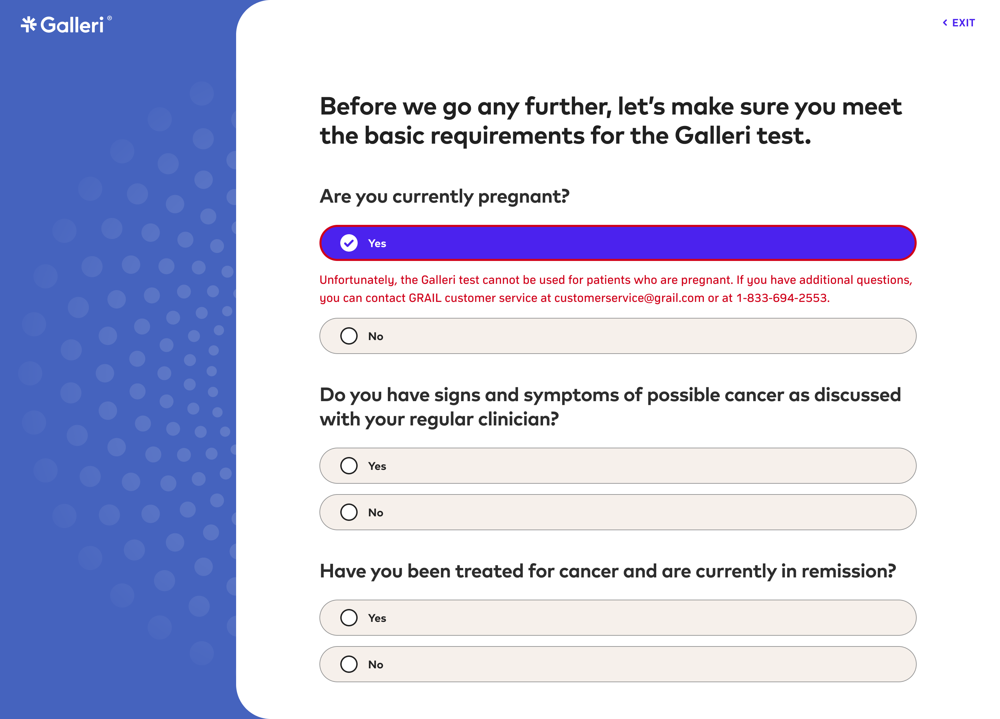
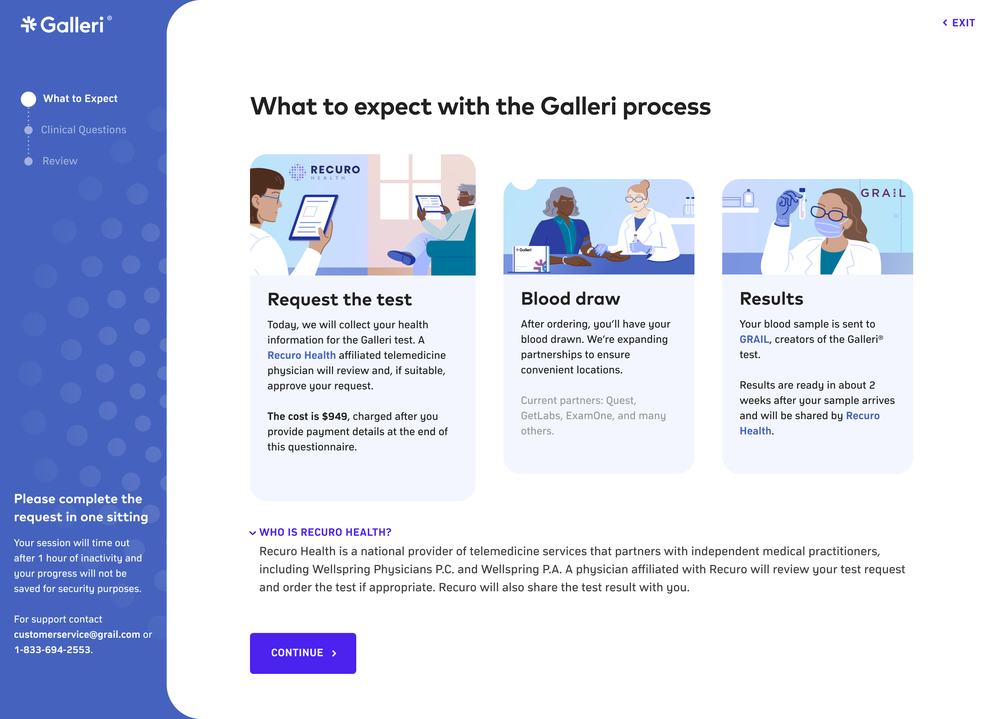
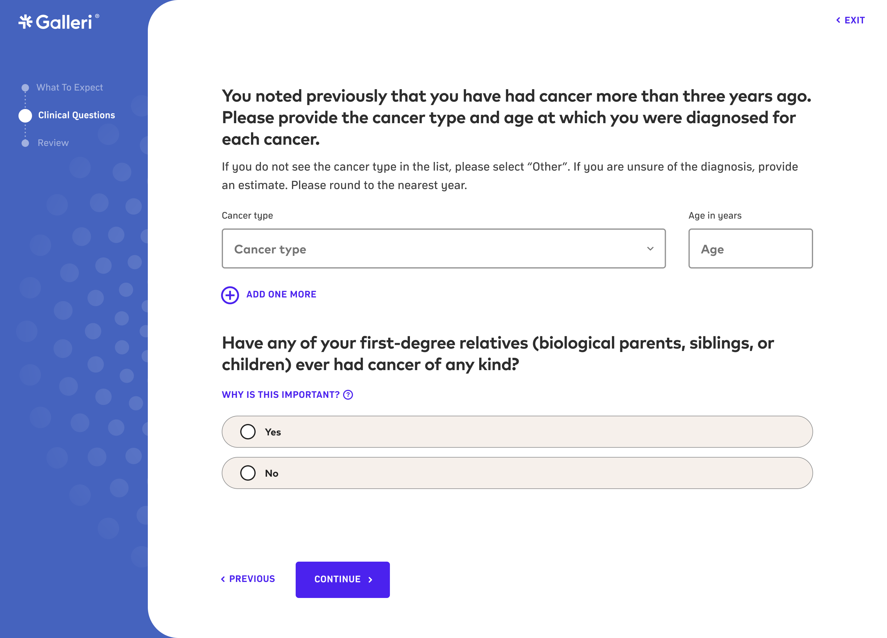
Impact · Changes 2
27.3%
Increase in telemedicine orders successfully submitted
~8 mins
Average reduction in time-to-confirmed-order per patient (~35%)
06 — Validation & Outcomes
What the data showed after launch
We launched the changes after thorough user testing to compare the redesigned flow against the legacy flow. Results were measured across completion rate, time-to-order, support ticket volume, and surveys.
Increase in confidence
The ~35% reduction in time to complete the form and 27.3% increase in successfully submitting an order was a strong indicator of increase in confidence and less hesitation.
Decrease in assistance needed
The 52% decrease in login related tickets showed a clear correlation of the way the changes streamlined not only the account creation process but also the login system.
The changes successfully shifted the experience from feeling overwhelming to feeling very structured. And importantly, we achieved this without compromising any medical or compliance requirements.
07 — Reflection
What I'd continue exploring
The biggest lesson from this project
With friction reduced at checkout, the logged in portal was open to a lot more opportunities to better the patient experience:
Clear, assisted explanations of the test results
Guide to next step after test results
Test results history and ongoing health tracking
Saved medical profiles for future orders
I'm proud that the work didn't just improve conversion but it also created a stronger foundation for long-term patient trust.
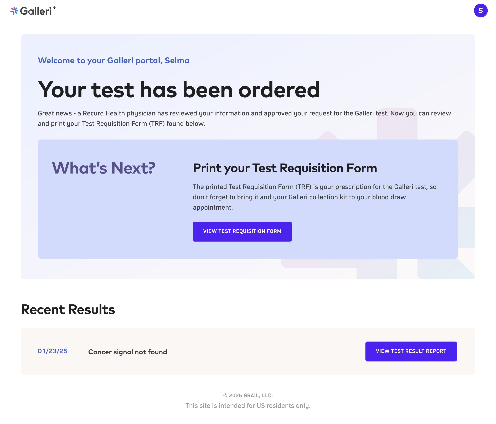
Protected Content
This case study is password protected
This project contains confidential work. Please enter the password to continue.
GRAIL's provider teams were managing clinical orders through a fragmented mix of fax, email, and manual data entry. This project replaced that workflow with a centralized real-time portal that gave providers full visibility into order status, specimen logistics, and results — while eliminating the manual correction loop that had been consuming ops resources.
~80%
Reduction in total manual order corrections
Days → Minutes
Faster order submission vs. fax-based process
100%
HIPAA-compliant digital order trail replacing paper fax
01 — Context
Replacing a fax-based system with a real-time clinical operations platform
Healthcare provider organizations ordering Galleri tests were relying on fax and phone to submit orders, check status, and resolve issues. GRAIL's ops team was spending significant time manually entering and correcting these submissions and providers had no visibility into what happened after they sent a fax.
The real-time Provider Portal was designed to give providers a self-service interface that handled the full order lifecycle digitally, with live status tracking and automated validation.
Starting roadblocks
Fax process was slow, manual, and error-prone
Very manual process to resolve errors
85% of faxed forms had errors and required a follow up
Average of 3-5 days from fax to confirmed order
The problems we faced was clear that scalability was the key issue of this manual process both internally and externally. We needed a scalable way for providers to submit eligible prescriptions directly into our lab system.
Context flow — existing process
Provider fills out test requisition form
→
Fax to GRAIL
→
Internal team manually enters info into system
→
Errors flagged
→
Contact provider for correction
→
Contact patient for information
→
Test gets processed
⚠ Avg. 1-3 days to resolve errored test order
02 — Initial Assumptions & Learnings
What we expected vs. what we found
At first, the solution seemed obvious: Build a digital version of the paper requisition form. We conducted research sessions with our user base, providers, nurses, and practice admins, to understand how they currently handled submissions and results and if our hypothesis was the right direction.
Assumption
Providers would need a digital version of the paper requisition form to conveniently submit their test orders to us directly.
Reality
Our assumptions were correct in needing a digital requisition form but what we didn't anticipate were the requirements and regulations surrounding this solution.
Problem
Digitizing the form wasn't just about convenience. It meant that we were starting to dabble into digital HIPAA regulations where strict access control and scoped permissions were necessary.
Insight
The real opportunity was not form digitization. It was infrastructure modernization.
03 — Key Designs
Three design decisions that drove outcomes
Key Design 1
Real time form validation
The fax was open to incomplete and incorrectly filled out fields. The digital form in the portal were created with specific validations in mind. For example, we learned that about 85% of faxes were missing the patient's email address. Providers did not know that field is a hard requirement on GRAIL's end to start processing the order. The email address field was created with email validation APIs to ensure the validity and format of the inputs.
Not only did these validations effectively eliminate incomplete or incorrectly filled out forms, but they also lifted the burden of manual re-entry of information and manual error correction workflows for our internal team. The digital form placed the responsibility of checking the information to the portal user rather than our internal team who are not really part of the process.
Before
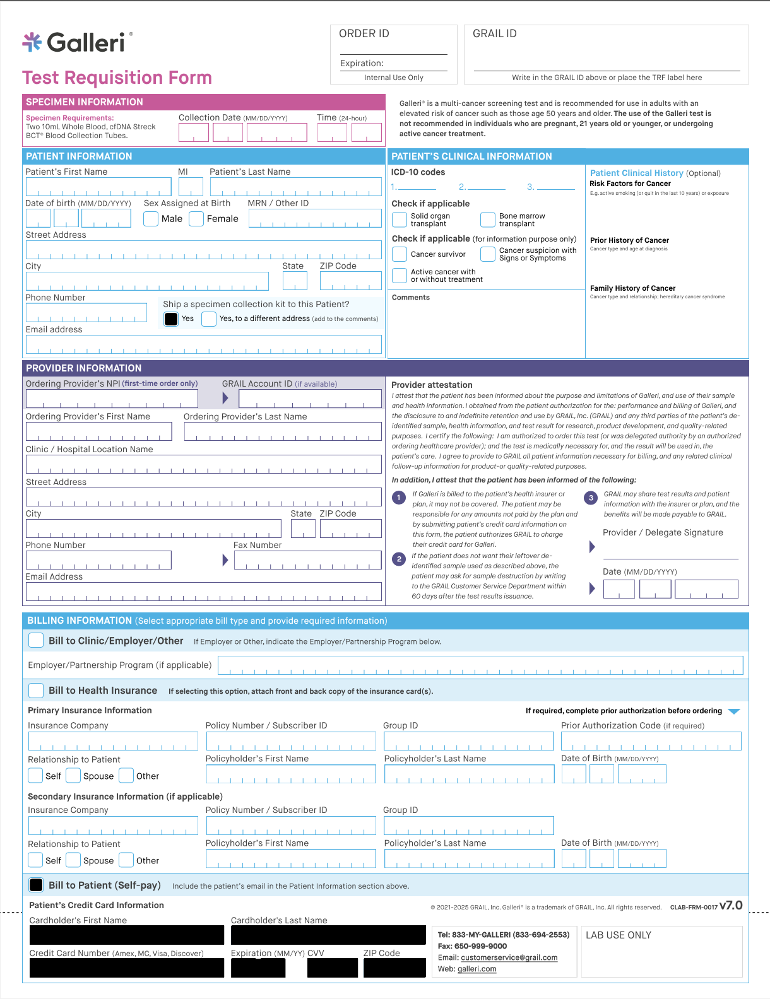
After
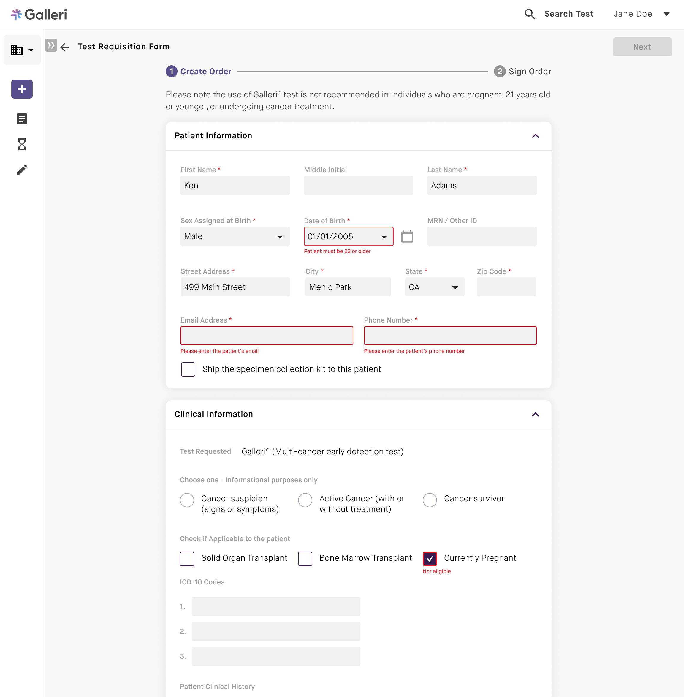
Key Design 2
Role-based access & scope based notifications
To be compliant under digital HIPAA law and regulations, we made sure to fully flesh out the complexities surrounding access controls and scoped notifications.
This was crucial in preventing data overexposure while keeping workflows simple. Below you can see the workflow of access control.
Role Based Access
① Admin creates user
→
② User created as unactivated
→
③ Email sent to new user
→
④ New user activates account
→
⑤ Admin can edit user permissions
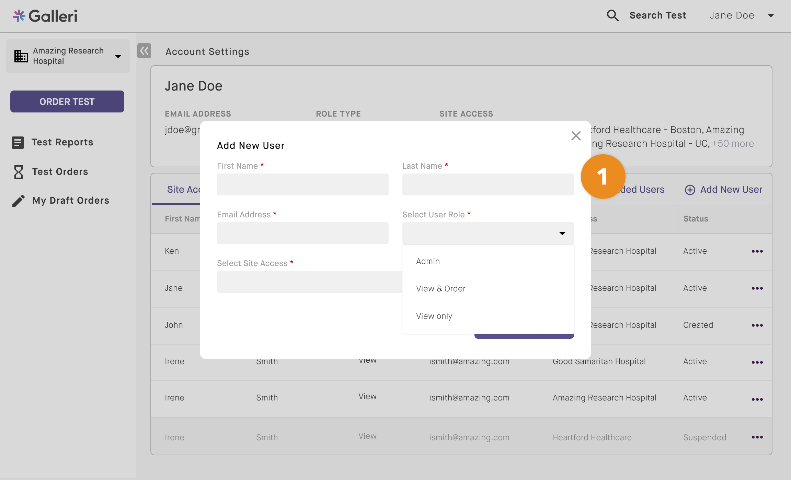
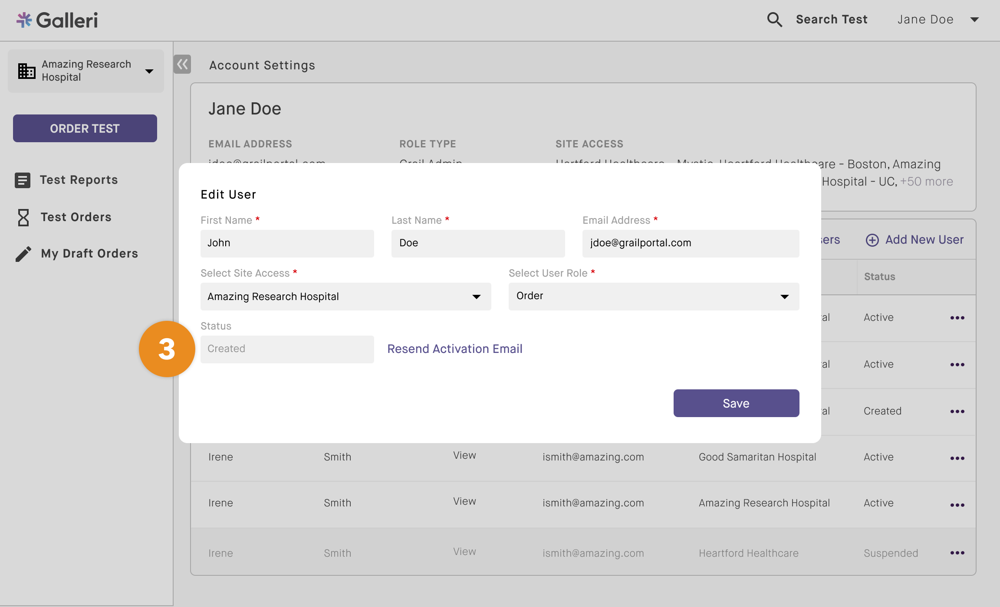
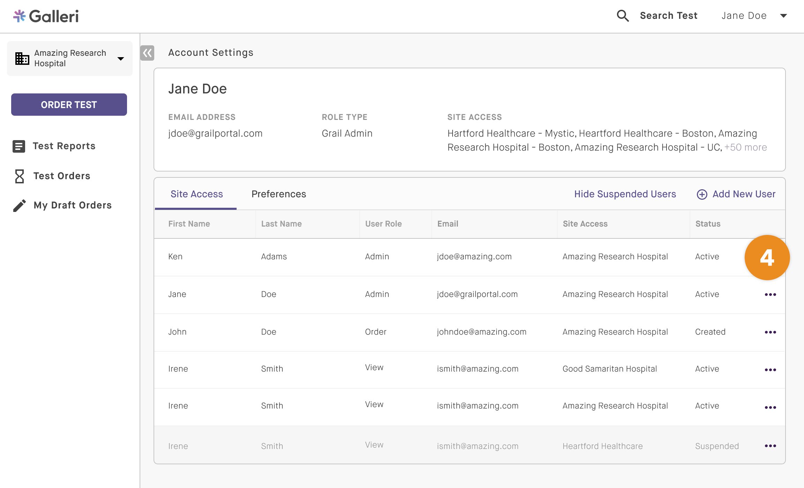
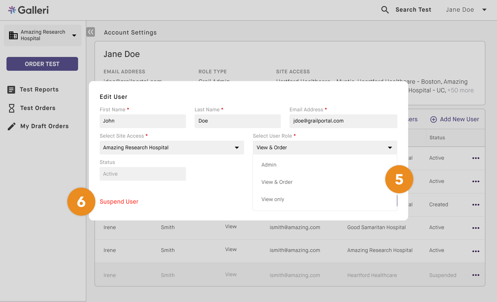
Provider Scoped Notifications
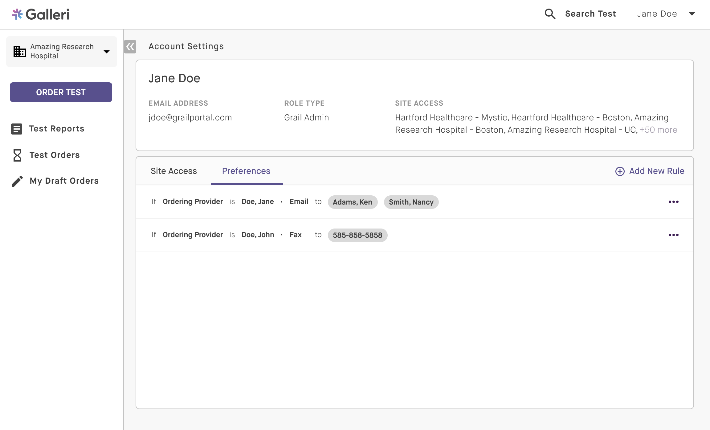
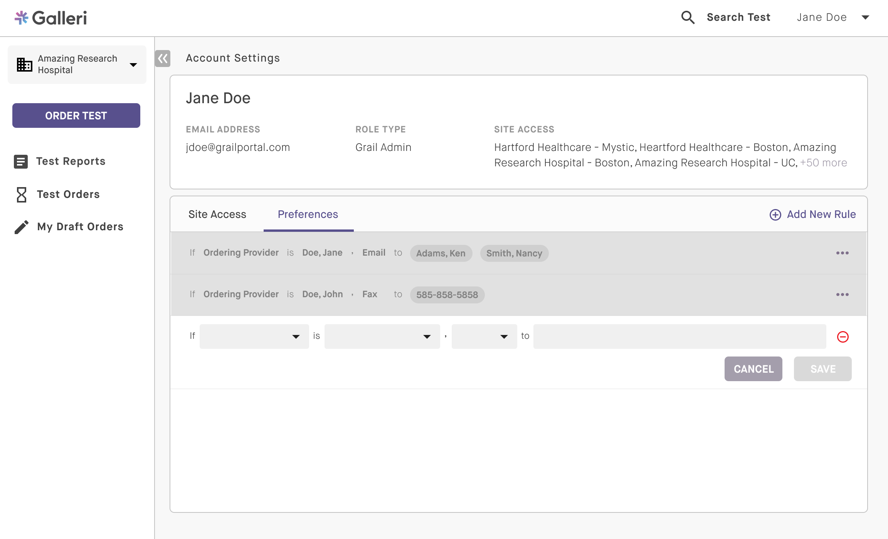
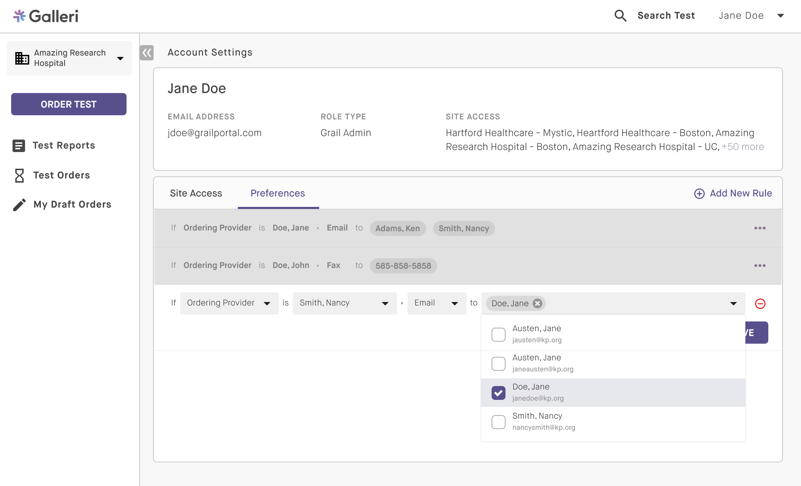
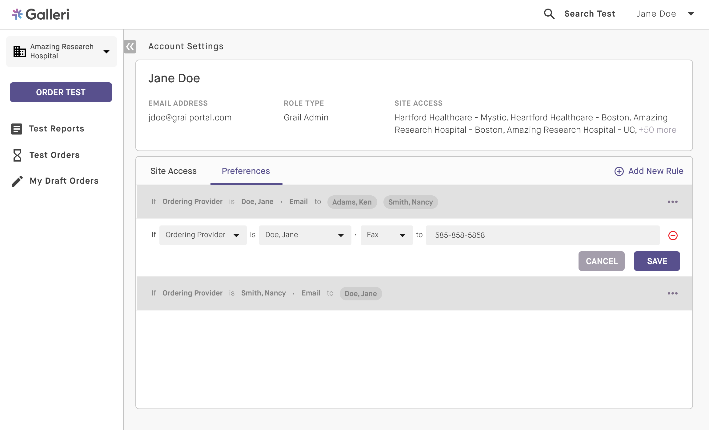
Key Design 3
Streamlining API Connections
Larger provider organizations wanted to connect their existing EHR systems directly to GRAIL's order management system via API. We designed a configuration that allowed admins to map their EHR fields to GRAIL's order schema.
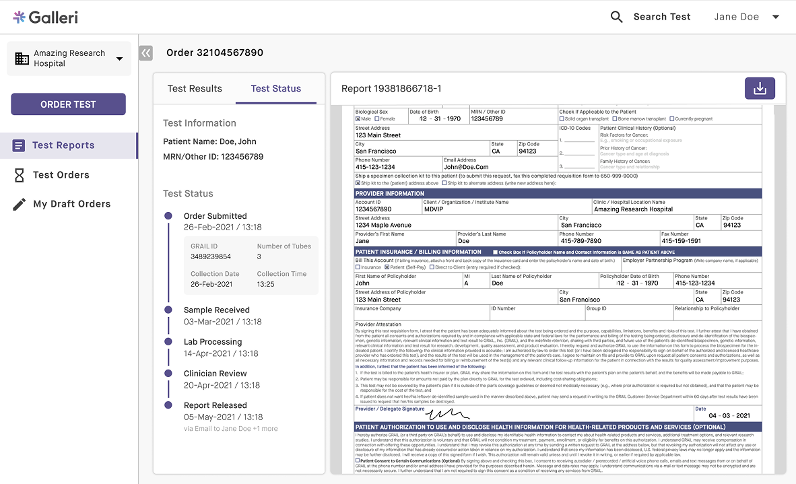
Impact
200+
Provider organizations onboarded
8 Mins
Average time to complete and submit an order vs average of 3-5 days with fax order
70%
Organizations fully transitioned within one week of onboarding
100%
HIPAA-compliant digital audit trail on every order
04 — Impact
What this project taught me about B2B healthcare design
The most important lesson from the Provider Portal was that workflow trust matters more than feature completeness. Providers didn't need every capability on day one. They needed to trust that the system was accurate, that their submissions weren't falling into a void, and that when something went wrong they'd know immediately and know how to fix it.
Designing the inline validation layer was technically straightforward, but getting the error copy right, specific, non-blaming, actionable, required more iteration than any other design element on the page. Clinical staff are time-pressured and error-averse. Every message had to feel like a helpful guide, not a system rejection.
I also learned that role-based access in B2B platforms is often under-designed. Most tools treat it as a permissions matrix buried in settings. We surfaced it as a first-class onboarding step.
AxleHire's whitelabel last-mile services were projected to grow 8x in volume as we expanded into new regions nationwide. However, the sudden growth was going to cause a huge burden on our internal teams as our Driver App was not equipped to handle the quick increase in volume. The driver app was completely redesigned with efficient workflows incorporating multi-package scanning and failure handling flows to scale reliably to 98.4% on-time delivery across 120k weekly deliveries.
98.4%
On-time delivery rate achieved after launch
~30%
Increase in successful deliveries
50%
Decrease in driver support contacts per shift
01 — Business Context
Building for reliability at 120k deliveries a week
AxleHire (now Jitsu) operates as a last-mile carrier for clients including major retailers and e-commerce platforms. At the growth from 15k to 120k weekly deliveries, a 1% failure rate meant 1,200 failed packages per week — each one a support ticket, a customer complaint, and a potential client penalty.
The existing driver tooling wasn't built for this scale. Drivers were working around the app's limitations daily, creating informal workarounds that introduced inconsistency and made ops oversight nearly impossible.
Even small inefficiencies compounded quickly
Larger assignments
More complex warehouse coordination
Tighter delivery windows
Growing enterprise client expectations
02 — The Problem
A workaround culture hiding a systemic tooling failure
Driver interviews and ride-alongs revealed that the existing app was being used as a list reference, not an operational tool. Drivers had developed their own systems — sticky notes on dashboards, personal spreadsheets, group chats with dispatchers — to compensate for what the app couldn't do.
Manual package identification — drivers had to manually verify each package
Delivery location list — drivers decided to go their own route sequence
Failed delivery lost in the system — lots of packages went missing after attempts
End-of-shift reconciliation required calling dispatch — 20+ min per driver per day
The existing app experience
The breakdown wasn't just navigation or a routing volume issue. It was lifecycle clarity. We needed to explicitly map the lifecycle of a delivery with workflows for each state.
This was especially important because the Driver App sat in the middle of a live, multi-spoke ecosystem of products (Warehouse App, Dispatch App, Client App, Routing Algorithm). Every driver action triggered operational consequences elsewhere. This required designing the app as a coordination layer, not as a standalone tool.
03 — Delivery Lifecycle
Mapping the full driver shift from pickup to close
Before designing any screens, we mapped the complete delivery lifecycle. This revealed 10 distinct states a package could be in which gave insight into which states had no explicit workflows.
Available
→
Claimed
→
Active
→
Loading
→
In Transit
→
Delivered/Failed
→
Reattempt
→
Return
→
Completed
⚠ Steps with high friction or no explicit workflows
Instead of reacting to errors, I designed predictable workflows for each state. In order to do this, I made sure that each state was created with the following:
Clear entry requirements
Defined exit conditions
Guardrails
Failure handling paths
04 — Design Changes · Change 1
Designing a workflow for inevitable failed deliveries
The original app accounted for the successful delivery path very clearly. However, failure is not an edge case in last mile logistics. It is an ingrained part of the system. So it was important to create explicit workflows to guide drivers on how they should handle these situations.
Automatic reattempt logic
All failed deliveries are compiled at the end for reattempts. Instead of failures getting lost in the system, this explicitly allows the driver to readdress failures that happened earlier in their route. This explicit screen seamlessly flows into the delivery pattern for drivers to reattempt the deliveries.
Return workflow
For routes that have failed deliveries even after reattempts, a workflow was explicitly created for these packages to be returned to the warehouse. This ensured that every failed delivery for the day makes it back to the warehouse and reattempted the next day if possible.
Impact — Change 1
~30%
Increase in successfully reattempted deliveries
~70%
Decrease in lost packages after failed attempts
04 — Design Changes · Change 2
Embedding scanning into the infrastructure
When analyzing the effects of our growth, we identified that inbound processes did not collapse under the weight of increased volume. It was due to the fact that our warehouse app had a scanning device that utilized our label's QR codes. It brought on the idea to use the same uniquely identifiable QR codes for our drivers as well.
Previously, drivers had to manually verify their packages one by one. It was a very taxing process especially at the warehouses where drivers were dealing with an average of 24 packages per delivery route. This was slow and error-prone. It harbored a lot of pit falls where packages were discovered to be missing or damaged too late in the route.
Here you can see the new pick up process in action:
Before — Manual verification
After — QR scanning
The scanning system automatically identifies each package and references them to the manifest
Missing or misplaced packages are identified immediately
Drivers are able to accurately mark damaged packages
Reduced pickup time from hours to minutes
The implementation of scanning moved the burden of manual package verification from the driver to the app. Drivers could rely on the app to confirm the packages in their route and save time. This ensured that most delivery issues were prevented early in the delivery route.
Scanning workflow screens — Pickup
Scanning workflow screens — Dropoff
This was a feature that not only completely changed the pickup workflow, but it was a feature that could also be implemented into the entire drop off process. The scanning architecture was implemented into the drop offs to ensure the accuracy of the scaling workflow and business.
Impact — Change 2
36%
Faster pickup times
~13%
Decrease in average time to complete a delivery route
04 — Design Changes · Change 3
Behavioral guardrails
One of AxleHire's selling points was our world class routing algorithm which was able to take into account road closures due to construction or events, traffic patterns, etc. It ingested all of our clients' deliveries for the week and was able to produce any number of the most optimal and efficient routes depending on our fleet manifest.
This however is not emphasized to the drivers. So we observed that a lot of our drivers were completing the delivery route out of order believing that they can complete it faster to take on more delivery routes to earn more.
We created some guardrails to combat this behavior, show the reasoning behind our routes, and ultimately grow trust in our system that we would give them the most optimal route.
1. Rest of the route is displayed in order with the map
2. App calculates the new route if the newly selected stop is switched to the next stop
3. New route is displayed with the adjusted time and new estimated time to completion
06 — Reflection
The right friction can only be found in the field
The driver app was the most operationally constrained design project I've worked on. Every interaction had a real-world cost — a second of hesitation at a door, a missed tap in a stop, a wrong status update that became a client escalation. Designing for people who are moving fast, outdoors, under time pressure, with one hand full is a fundamentally different discipline than designing for office software.
The behavioral guardrails section was the most contentious part of the project internally. Operations wanted more guardrails; drivers wanted fewer. The resolution, friction only at failure-prone moments, invisible everywhere else, came directly from ride-alongs, not from a conference room. That's the lesson I carry: the right level of friction can only be calibrated in the field.
AxleHire's enterprise clients — major retailers managing thousands of daily shipments — had no self-service visibility into their delivery operations. Every status check, exception report, and order modification required contacting AxleHire's dispatch team directly. This project designed the company's first client-facing operations portal, giving enterprise customers real-time delivery visibility and automated order ingestion while reducing dispatch support requests by ~80%.
~80%
Reduction in dispatch support requests from enterprise clients
9.7/10
Average customer satisfaction score post-launch
01 — Context & Problem
Enterprise clients flying blind on their own deliveries
From the client perspective
No real-time visibility into delivery status across their order volume
Exception management required calling or emailing AxleHire dispatch
Order ingestion was manual — CSV uploads via email to an ops coordinator
Reporting was available only on request, with 24–48hr turnaround
No ability to update delivery instructions or address corrections without dispatch
Internal ops pain points
Dispatch team fielding 200+ client status inquiries per day
Manual order ingestion from CSV was error-prone and time-consuming
No audit trail for client-requested order changes
Client onboarding took 2–3 weeks due to manual setup processes
Build the portal that makes our clients feel like they're running their own logistics operation.
02 — Discovery & Insights
What enterprise clients actually needed
We ran discovery sessions with 6 enterprise client accounts, ranging from a regional grocery chain to a national furniture retailer. Their operations contexts were very different, but their core needs converged on three themes.
Key Finding 1
Clients didn't need every data point — they needed the right signal. Exception alerts (failed deliveries, address issues, late routes) were more valuable than comprehensive tracking dashboards that required interpretation.
Key Finding 2
Order ingestion was the highest friction point — not visibility. Several clients had dedicated coordinators whose primary job was reformatting order files to match AxleHire's CSV template. Automating this would free significant client-side resources.
Underlying need
Clients wanted to feel in control of their operations, not dependent on a third party for information about their own orders. The portal's emotional goal was autonomy — not just access to data.
03 — Design Principles & Requirements
The constraints that shaped every decision
ClarityInformation architecture optimized for exception identification — not data completeness. Clients should see what needs attention first.
FlexibilityPortable to clients with different order volumes, different workflows, and different technical sophistication levels.
My team's sanityEvery self-service action the portal enables is one fewer support contact for the dispatch team. Design for dispatch reduction.
04 — Design Changes · Change 1
Real-time map view of deliveries
The centerpiece of the portal was a live delivery map showing all active routes, their current status, and any exceptions flagged in real time. Clients could filter by region, client account, date range, and exception type — moving from a high-level overview to an individual delivery in two clicks.
Impact — Real-time map view
~80%
Fewer inbound client status inquiries to dispatch team
Faster
Exception resolution — clients act on alerts directly without dispatch involvement
04 — Design Changes · Change 2
Self-service CSV upload with real-time validation
We designed an order ingestion interface that accepted any CSV format and used field-mapping logic to automatically match client columns to AxleHire's order schema. Unrecognized fields were surfaced for manual intervention. Validation errors appeared inline, per row, before submission.
Impact — Self-service CSV
Automated
Order ingestion — no coordinator involvement for standard uploads
2–3 wks
Client onboarding time reduced to under 1 day for standard integrations
Increased
Client ability to manage their own operations independently
05 — Final Outcomes
What shipping this taught me about enterprise product design
The client portal was the project that taught me how much enterprise product design is actually organizational design. The portal didn't just give clients visibility, it redistributed work that had been sitting entirely on AxleHire's internal ops team. That redistribution had implications for team structure and client contracts that went well beyond any individual screen.
The most unexpected outcome was how much the portal changed the client relationship itself. Clients who previously called daily stopped calling not because they didn't have questions, but because the portal answered them before they could form. Several clients reported that having visibility made them more patient with exceptions, not less. Seeing the operational complexity of last-mile delivery in real time gave them context that phone calls never could.
If I were starting this project over, I would have pushed harder for a dedicated exception management workflow earlier. The map view was powerful, but high-volume clients needed a task-oriented exception queue, not a spatial overview, to manage efficiently.